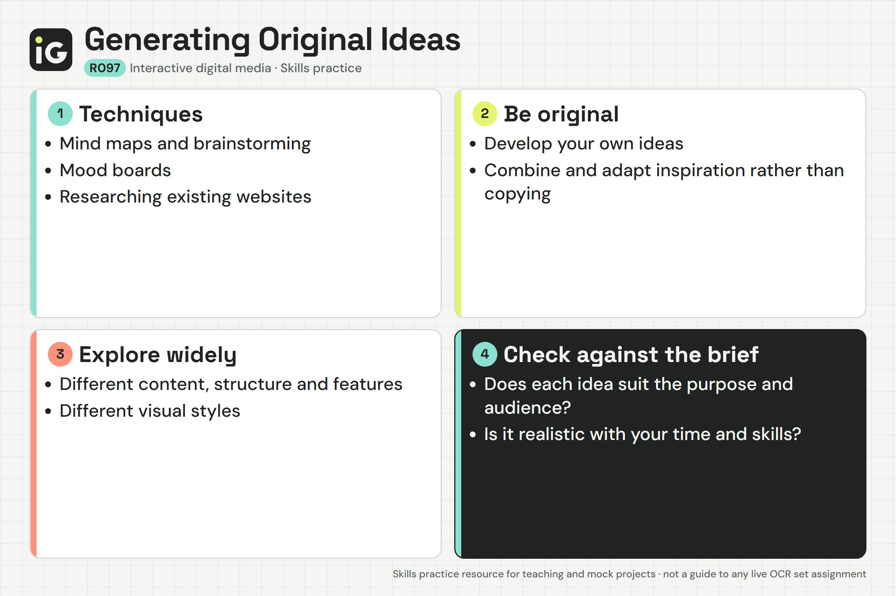

Originality
- New ideas of your own

Generate original ideas that meet the client brief.
Use this checklist to make sure you can cover every part of this topic.
Research what already exists, then develop your own ideas. Inspiration is fine – copying isn't. Creative products follow conventions users understand while adding something new.